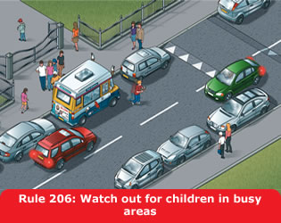

2. Pedestrians (205 to 210)
205
There is a risk of pedestrians, especially children, stepping
unexpectedly into the road. You should drive with the safety of
children in mind at a speed suitable for the conditions.
206
Drive carefully and slowly when
- in crowded shopping streets, Home Zones and Quiet Lanes (see Rule
218) or residential areas
- driving past bus and tram stops; pedestrians may emerge suddenly
into the road
- passing parked vehicles, especially ice cream vans; children are
more interested in ice cream than traffic and may run into the road
unexpectedly
- needing to cross a pavement or cycle track; for example, to reach
or leave a driveway. Give way to pedestrians and cyclists on the
pavement
- reversing into a side road; look all around the vehicle and give
way to any pedestrians who may be crossing the road
- turning at road junctions; give way to pedestrians who are
already crossing the road into which you are turning
- the pavement is closed due to street repairs and pedestrians are
directed to use the road
- approaching pedestrians on narrow rural roads without a footway
or footpath. Always slow down and be prepared to stop if necessary,
giving them plenty of room as you drive past.

207
Particularly vulnerable pedestrians. These include:
- children and older pedestrians who may not be able to judge your
speed and could step into the road in front of you. At 40 mph (64
km/h) your vehicle will probably kill any pedestrians it hits. At
20 mph (32 km/h) there is only a 1 in 20 chance of the pedestrian
being killed. So kill your speed
- older pedestrians who may need more time to cross the road. Be
patient and allow them to cross in their own time. Do not hurry
them by revving your engine or edging forward
- people with disabilities. People with hearing impairments may not
be aware of your vehicle approaching. Those with walking
difficulties require more time
- blind or partially sighted people, who may be carrying a white
cane using a guide dog. They may not be able to see you approaching
- deafblind people who may be carrying a white cane with a red band
or using a dog with a red and white harness. They may not see or
hear instructions or signals.
208
Near schools. Drive slowly and be particularly
aware of young cyclists and pedestrians. In some places, there may be
a flashing amber signal below the ‘School’ warning sign
which tells you that there may be children crossing the road ahead.
Drive very slowly until you are clear of the area.
209
Drive carefully and slowly when passing a stationary bus showing a
‘School Bus’ sign (see ‘Vehicle markings’) as
children may be getting on or off.
210
You MUST stop when a school crossing patrol shows a
‘Stop for children’ sign (see ‘Signals by
authorised persons’ and ‘Traffic signs’).
Law RTRA sect 28